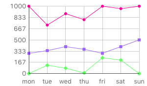
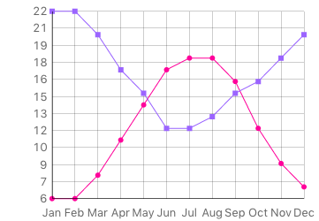
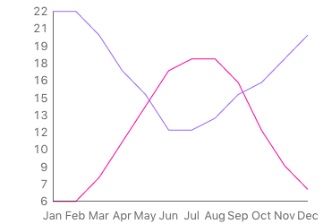
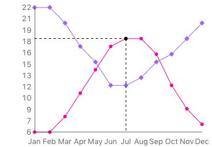

The line graph widget provides the ability to display data quickly and easily. When the Line Graph is first dragged out from the tools palette onto your stack, you will see it is pre-initialised with a few series of data so you already have something that looks like a chart.

A line graph widget can be created by dragging it out from the Tools Palette, where it appears with the following icon:
Alternatively it can be created in script using:
create widget as "com.livecode.widget.linegraph"
Unarguably the most important property you will need to know about as
you start using the line graph is the graphData. The graphData is
comma and line delimited with the first item of each line being a point
on the x-axis and each subsequent item on a line being a point on the
y-axis of a data series.
For example:
local tData
put "Jan,6,22" & return & \
"Feb,6,22" & return & \
"Mar,8,20" & return & \
"Apr,11,17" & return & \
"May,14,15" & return & \
"Jun,17,12" & return & \
"Jul,11,18" & return & \
"Aug,18,13" & return & \
"Sep,16,15" & return & \
"Oct,12,16" & return & \
"Nov,9,18" & return & \
"Dec,7,20" into tData
set the graphData of widget "Line Graph" to tData

The graphXLines and graphYLines properties control whether the graph
displays the horizontal and vertical lines respectively. The
markerStyles property controls the shapes of the data markers. This
can be set to empty to remove the markers entirely. For example, to
remove all extraneous parts of the graph other than the data line, use
the following:
set the graphXLines of widget "Line Graph" to false
set the graphYLines of widget "Line Graph" to false
set the markerStyles of widget "Line Graph" to empty

A marker style may be empty, "circle", "diamond", "square",
"filled circle", "filled diamond" or "filled square".
The showLines property governs the line visibility so that you can
just show markers:
local tMarkers
put "filled circle" & return & "filled diamond" into tMarkers
set the markerStyles of widget "Line Graph" to tMarkers
set the showLines of widget "Line Graph" to false
We can set the line/marker colors with the graphColors property. This
is a return-delimited list of colors in RGB(A) format. For example:
local tLineColors
put "255,0,0,128" & return & "0,255,0,128" into tLineColors
set the graphColors of widget "Line Graph" to tLineColors
The final property of the Line Graph is the hilitedCoordinates
property. You can set the hilitedCoordinates to a point on any of the
lines on the chart. For example:
local tHilitedDataPoint
put "Jul,18" into tHilitedDataPoint
set the hilitedCoordinates of widget "Line Graph" to tHilitedDataPoint
